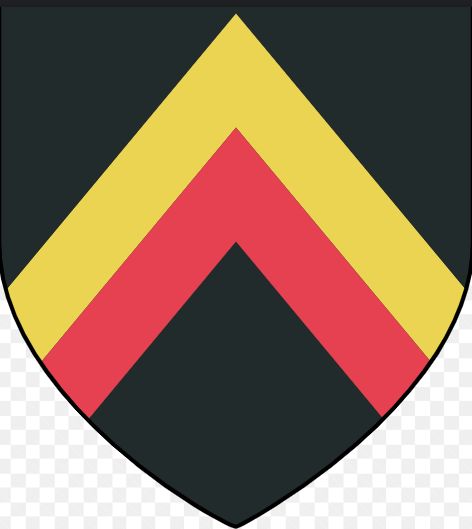
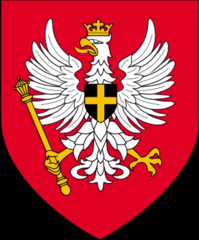
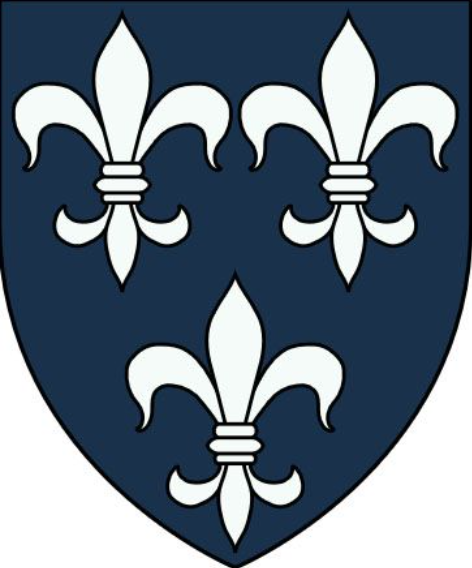
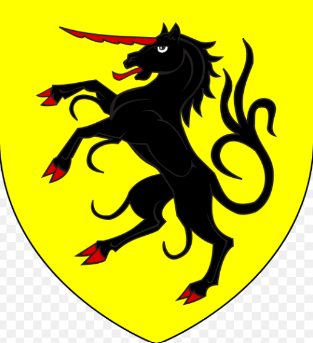

Northern Kingdoms
Countries(Kingdoms)
Aedirn
Aedirn, named after Aedireen, is one of the Four Kingdoms which lies between Temeria and the massive Mahakam Mountains to the west, and the Blue and Fiery Mountains to the east. The Kingdom is feuding with Kaedwen about the land called Lormark or Upper Aedirn, depending on the interested party's political persuasion. These lands have been disputed for ages, with Kaedwen laying claim to them as well.
Redania
Redania, named after Roeden, is a wealthy realm which profits from trade and agriculture and one of the Four Kingdoms. The capital city of Redania is Tretogor. Other prominent cities are Oxenfurt, with the largest university in the Northern Realms and the free city of Novigrad. The kingdom's neighbors are Kovir, Caingorn, Kaedwen, Aedirn, and Temeria. Redania is a wealthy realm which profits from trade and agriculture. For ages, it has fought a customs war with Temeria, which is its main competitor in the north. The country possesses the best intelligence service in the world. The government of Redania is heavily influenced by sorceresses.
Temeria
Temeria is one of the northern kingdoms, lying south of the Pontar river. Its neighbors are Redania, Kerack, Kaedwen, Aedirn, Mahakam, Lower Sodden, and Cidaris. After the first and second wars, Temeria profited the most out of the defeat of Nilfgaard, expanding its borders as far south as Angren and Riverdell, reaching the Amell mountains. But the Kingdom also received a heavy blow regarding its economy, which forced it to buy goods from their southern neighbor.
Kaedwen
Kaedwen (from Elder Speech Caed Gwen translated as White Forest) is the largest of the Northern Kingdoms (and the second largest country in the Continent, next to Nilfgaard). Its main cities are its capital, Ard Carraigh, and the city of Ban Ard, famous for its sorcery school. It is also known for its cold and unforgiving climate, along with the many forests within its borders. King Henselt frequently quarreled with neighboring Aedirn, mostly over the ownership of the Pontar Valley which once belonged to the Kaedwenians. Kaedwen also shares borders with the kingdoms of Redania and Caingorn; and portions of the Fiery Mountains, the Kestrel Mountains and the Blue Mountains run through the kingdom. The witchers' fortress of Kaer Morhen is located amidst the peaks of the Blue Mountains, and further south lies the land of the Free Elves, an enclave established by elves seeking refuge from centuries of warring with humans. In the far future, the weather changed enough that northern regions, like Talgar, Caingorn, and Kaedwen, are no longer suitable to grow certain types of produce due to the colder climate. In particular, Kaedwen no longer has the capability to grow grapevines and thus no longer has a wine industry.